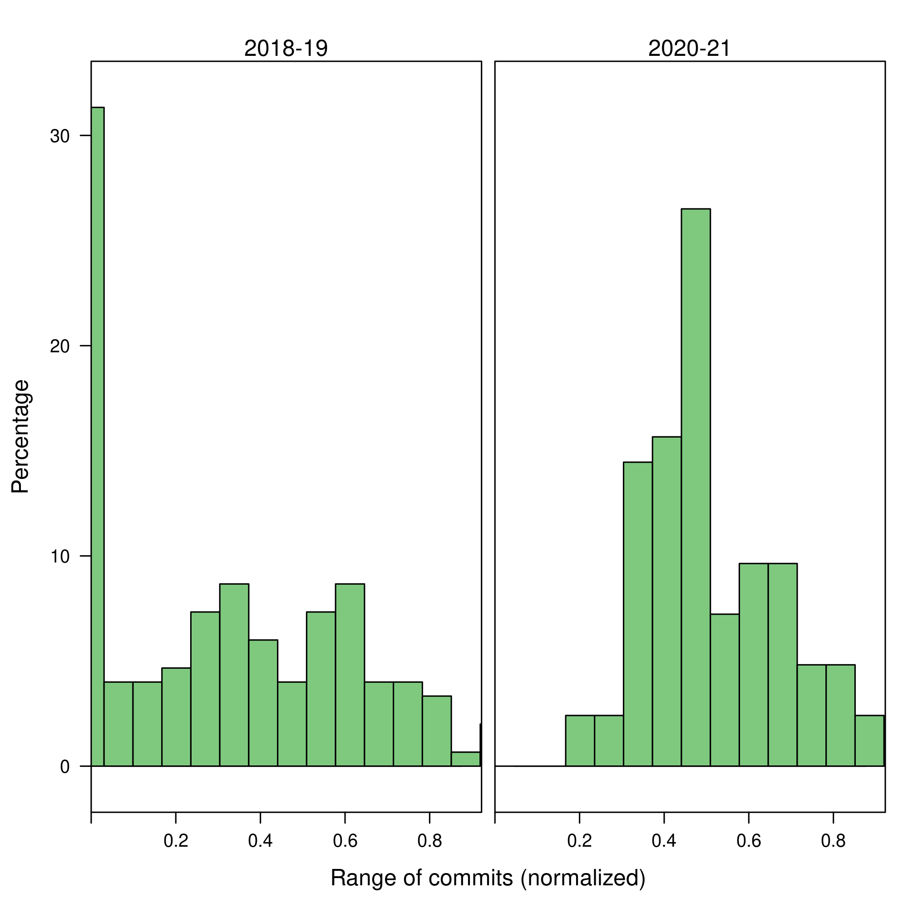

La siguiente gráfica muestra la evolución temporal de los commits realizados diariamente por cada grupo de trabajo. Pulsa en la imagen para ver la gráfica interactiva.
En este histograma se agregan el total de commits realizados por cada grupo de trabajo durante todo el período de trabajo. Se aprecia que un gran número de grupos han efectuado pocas interacciones con su repositorio. Este hecho se explica porque aquellos grupos y estudiantes que han percibido a GitHub como un obstáculo, o han tenido dificultades para trabajar con los repositorios, han optado por realizar una entrega a la antigua usanza subiendo todo el código en uno o dos commits al finalizar el trabajo.
De forma individualizada se pueden observar los commits realizados por cada estudiante. Nuevamente se observa que es frecuente que los usuarios realicen un número bajo de commits. No obstante, también es reseñable la existencia de estudiantes que generan un número muy elevado de cambios en el repositorio de su grupo.
Estas observaciones se manifiestan en el siguiente histograma, que recoge el número máximo de commits realizado por un estudiante en cada grupo, normalizado por el total de commits. En otras palabras, este histograma distingue entre los grupos en los que ha habido un estudiante con un peso muy elevado (valores cercanos a 1), y los grupos en los que el trabajo ha estado más repartido. Es destacable que es frecuente que los grupos estén marcados por las contribuciones de un único individuo.
Este análisis puede mejorarse separando por grupos de matriculación (o, lo que es equivalente, por profesor). Ahora es visible que el rol del profesor es clave para la gestión distribuida de tareas. Los grupos E105 y Q103 corresponden a los profesores que han liderado el PIE, y son en los que el uso de GitHub se ha integrado en la rutina del aula.

Otra forma alternativa de estudiar el trabajo dentro de cada grupo y la interacción con GitHub es a través del rango de commits (normalizado con el total de commits): la diferencia entre los valores máximo y mínimo número de commits, o en otras palabras, la diferencia entre el número de contribuciones del estudiante más implicado y el menos implicado. En este caso, los grupos que han descansado sobre un único estudiante están identificados por valores cercanos a 0 en este histograma.

Nuevamente, separando por grupos de matriculación se advierte la importancia del rol del profesor.